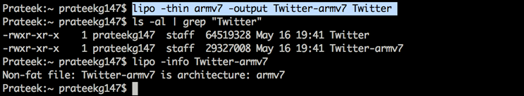

In this article, we will talk about FAT binaries and see more usage of LLDB.
Fat binaries are single binaries that are compiled for different architectures. They are done so because it is easier to ship a single binary for different architectures. Apple has been changing the architecture in the last three versions of it’s iPhones, armv7, armv7s, and arm64. The good thing is that new iOS devices can run applications compiled for older architectures as well. However it is recommended to upgrade the architecture of the application for enhanced performance.
You can see the architecture for your project by going to the Project in Xcode and looking under Build Settings.
A good way to find the architectures for which a binary is deployed is using otool. You can use the -f command to look at the fat headers.
As you can see, it doesn’t mention the architecture name but the cputype and cpusubtype. However, after a bit of lookup from the information on cputype and cpusubtype, you can find out that the first one is armv7s whereas the second one is armv64. You can also use Clutch to find this out. Whitle decrypting, it can give information about the kinds of architectures the binary had. As you can see, in this case it was armv7 and arm64.
The easiest way is to find via the tool lipo
In some cases, if some tool doesn’t work against a particular application, it is better to strip that architecture from the binary. This can be done using a tool named lipo. This is essentially useful as a lot of tools don’t work against arm64 binaries.

So with this little intro about fat binaries out of the way, lets carry on using LLDB. Like last article, we will be performing the analysis on Twitter app. Using Hopper, we can see some methods in the Twitter app.
So let’s set a breakpoint for the method b -[T1CommerceOfferHowWorksView setHiddenObserver:].
Oops, looks like we are unable to set a breakpoint. But why is that ? The reason is, LLDB hasn’t loaded the symbols from the binary yet. The symbols are what contains information about the class names and methods. This is unlike GDB where it loads the symbols while performing analysis on the binary. Remember however that you are running the LLDB client on your system and not the device. To confirm that you have not yet loaded the symbols, you can use the command image dump symtab to load the symbols and look for this particular method, you will not find it.
In order to load the symbols from the binary into LLDB, first download the LLDB binary onto your computer, then use the following command to load the symbols. Note that the architeture is set to armv7 by default.
And now, you can see that you can set the breakpoint.
If you know that the app is compiled for a 64 bit architecture, and the device is a 64 bit device, you should set the architecture to arm64. Does that make a difference ? Yes. Because the address will be different for the same method for different architectures (Fat binaries) and the method will not be called if you have set the breakpoint for a different architecture than the device it is compiled on.
Another thing. If you ever run a command and get the error invalid frame, it means that the process is still running. In order to execute commands, the process must be paused. This can be done using the process interrupt command.
If you think that arm64 is hard to understand and it is a bit difficult to modify the runtime flow, you can load the same executable on a 32 bit device and use GDB or LLDB to modify the variables and change the runtime flow. This is because most applications currently come with 32 bit support. However, in the coming year or so, this will not be the case. We will also cover arm64 assembly in a later article.